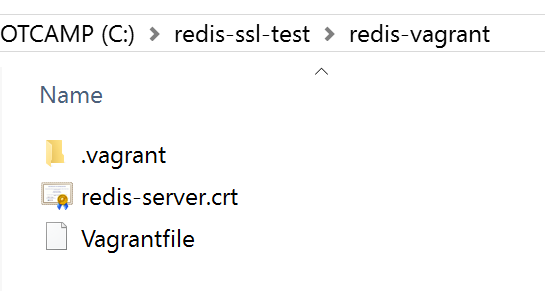
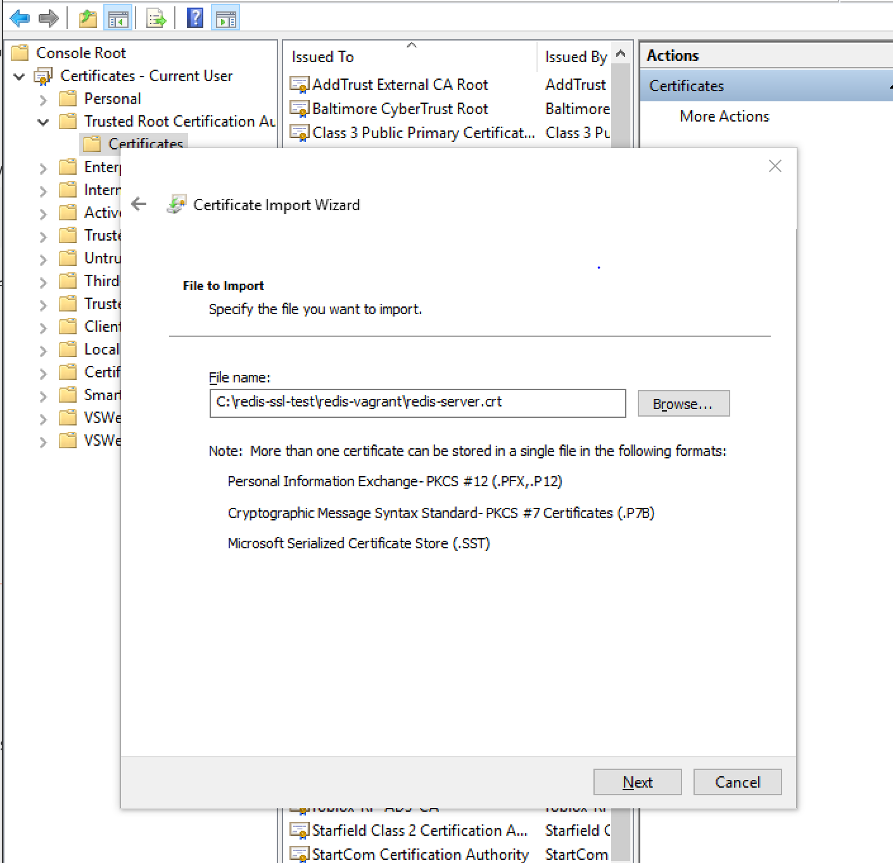
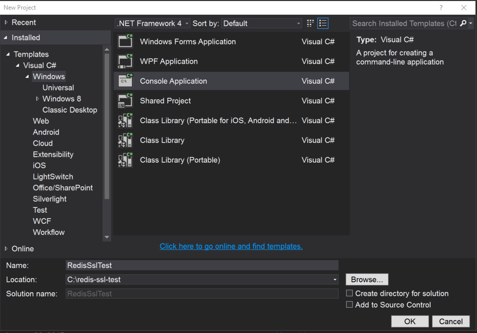
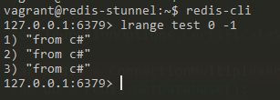

Redis, STunnel, and C#
In this blog post, I will try to demonstrate how to setup a working environment with StackExchange.Redis package is communicating to a Redis box using SSL through STunel.
By the end of this post, you will have a working environment on Vagrant like this:
1 | +------------------------------+ |
Redis and SSL
Our first step is to install Redis and then generate a self-signed certificate to be able to connect through an STunnel.
For this post, we will use Ubuntu 14 on Vagrant, let me know if you want to know how to do it in AWS/Ubuntu 16.
Setting up Vagrant
Open up the command line, create a new directory:
1 | >cd C:\ |
Open up your Vagrant file, and it should look like this:
1 | Vagrant.configure(2) do |config| |
Please note that the shell script is inline for convenience. There is nothing especial about this setup; we only forward port 6380 for our SSL communication.
Go back to the command line and type:
1 | >C:\redis-ssl-test\redis-vagrant>vagrant up && vagrant ssh |
You should be inside your test Ubuntu environment. Inside here let’s see if we correctly installed Redis.
1 | vagrant@redis-stunnel:~$ redis-cli ping |
We don’t have to do anything with redis; STunnel will be the one you configure.
The next step is to enable STunnel, open up stunnel configuration file:
1 | vagrant@redis-stunnel:~$ sudo vim /etc/default/stunnel4 |
And change ENABLED=0 to ENABLED=1
1 | . . . |
After that, you need to create a public/private certificate.
1 | vagrant@redis-stunnel:~$ sudo openssl req -x509 -nodes -days 3650 -newkey rsa:4096 -keyout /etc/stunnel/redis-server.key -out /etc/stunnel/redis-server.crt |
You will get some questions regarding the certificate; the most important ones are Common Name and Organization Name. Make sure these match the IP address of your Vagrant box.
1 | Country Name (2 letter code) [AU]:US |
After generating the certificates, we will create a new configuration file for STunnel. This configuration will tell STunnel to listen to an external port and redirect traffic to an internal port. In this case, we want STunnel listening to port 6380 and redirecting traffic to port 6379. 6379 is the default Redis port.
Go back to the command line and type:
1 | vagrant@redis-stunnel:~$ sudo vim /etc/stunnel/redis.conf |
And type the following configuration:
1 | pid = /var/run/stunnel.pid |
The name inside the brackets [redis-server] is something we can name per our convenience.
Now you can restart STunnel service:
1 | vagrant@redis-stunnel:~$ sudo service stunnel4 restart |
Everything should be running correctly. You can confirm this by running:
1 | vagrant@redis-stunnel:~$ sudo lsof -i :6379 |
Installing certificate
The last step before going to VisualStudio is to install the new crt file into your certificate store.
In a real production environment, this should be defined beforehand (probably), but for now, you will install it as part of the Current User Root store.
To extract the public certificate from Vagrant, you have to make sure you’re back into Windows command line.
1 | C:\redis-ssl-test\redis-vagrant> vagrant ssh -c "sudo cat /etc/stunnel/redis-server.crt" > redis-server.crt |
After that, the certificate file should be sitting next to the Vagrantfile.

To install the certificate, you can follow this steps:
- Windows + R -> mmc
- Click on File -> Add/Remove Snap-In
- Click on Certificates and then “Add >”
- A new dialog will popup, select “My user account” -> Finish
- Click OK
- Under Console Root, make sure to expand “Certificates - Current User.”
- Click on “Trusted Root Certification Authorities” then on “Certificates” folder.
- You should see a lot of rows with CA
- Here click on “More Actions” at the right menu, then “All Tasks” and then “Import.”
- A new dialog will show, click on Next and then Browse for your certificate file.
- Click Next, and then Next again and Finish.
- You will get a Security Warning question, answer Yes

I know, all those steps, there is a Powershell way to do it, but I will let that to you.
Once you finished, you will see your new certificate as the first entry on the CA list.
You can close the snap-in manager; you don’t need to save console settings.
You’re ready to go to Visual Studio and use the newly created certificate.
C# simple project
You will create a simple C# Console application.
Go to Visual Studio and click on File -> New -> Project -> Console Application
For your convenience you can set:
- Location: C:\redis-ssl-test
- Name: RedisSslTest
- Create directory for solution: unchecked.

You will need to add “StackExchange.Redis” NuGet package for this demo.
Go to Project -> Manage NuGet packages… -> Browse -> Search -> StackExchange.Redis -> Click Install.
The source code for connecting to Redis goes like this:
1 | using System; |
The magic of this code happens at the handling of CertificateSelection.
Here we read the certificates installed on our computer, in this case, Current User,
and let the Redis package now it will need it to communicate through SSL to our local Vagrant machine.
I wanted to show you the hard way of installing the certificate because when I was doing testing,
always got an exception if I didn’t install the certificate first as part of the machine.
The easier way to do it, and the way you will find it on examples is like this:
1 | using System; |
Either way if you back to your Vagrant box, you can type:
1 | vagrant@redis-stunnel:~$ redis-cli |

Conclusion
Most of the problems I had while trying this setup was the CertificateSelection handler. Most examples online never combine having a self-signed certificate that won’t communicate to SSL directly and debugging StackExchange.Redis made it it easy.
My only complaint is that StackExchange.Redis swallows the exception that tells you exactly what’s going on